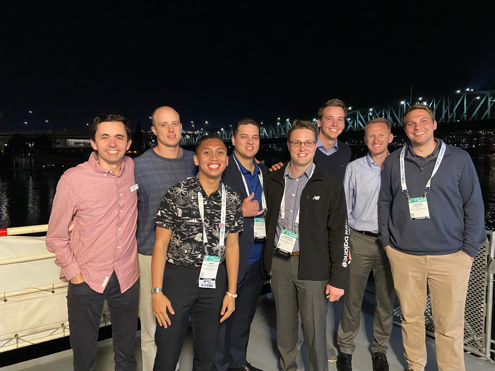

My projected career path
I just graduated from BYU-Idaho in political science. After graduation, I applied to BYU's MPA program and was accepted. I was fortunate enough to get an internship with Provo City. This April, I plan to intern with Orem City in the City Manager Office. Upon graduation from my program next year, I hope to become a management analyst and then move up the ranks to eventually be a city manager. I want to make an impact where ever I wouk and build up the people around me.
Experience to date
My schooling and internships have exposed me to a variety of expereicnes. While working for Provo, I have had lots of interactions with Council members. I have performed data analysis, budget trainings, and presented several times in night meetings. I have learned more about information systems and Excel during my time in the program. I have learned how to use solver, conduct AHP analysis, and code using VBA. All of these will aid me in my efforts to be a sucessful manager.
Anticipated contributions to the field

I have always been interested in how the way society and infrastructure work and the ways in which we improve upon them. To generate light, humans first made fires out of brush, twigs, and branches. Today, that process has been advanced and improved enough to allow someone to simply flip a switch and ignite a lightbulb. Similarly, government can be improved by a collective effort of professionals who work collaboratively to enrich their community. I want to be part of that effort. With a Master of Public Administration from Brigham Young University, I will contribute to the process of solving public problems in order to help local communities thrive with analytics and data.